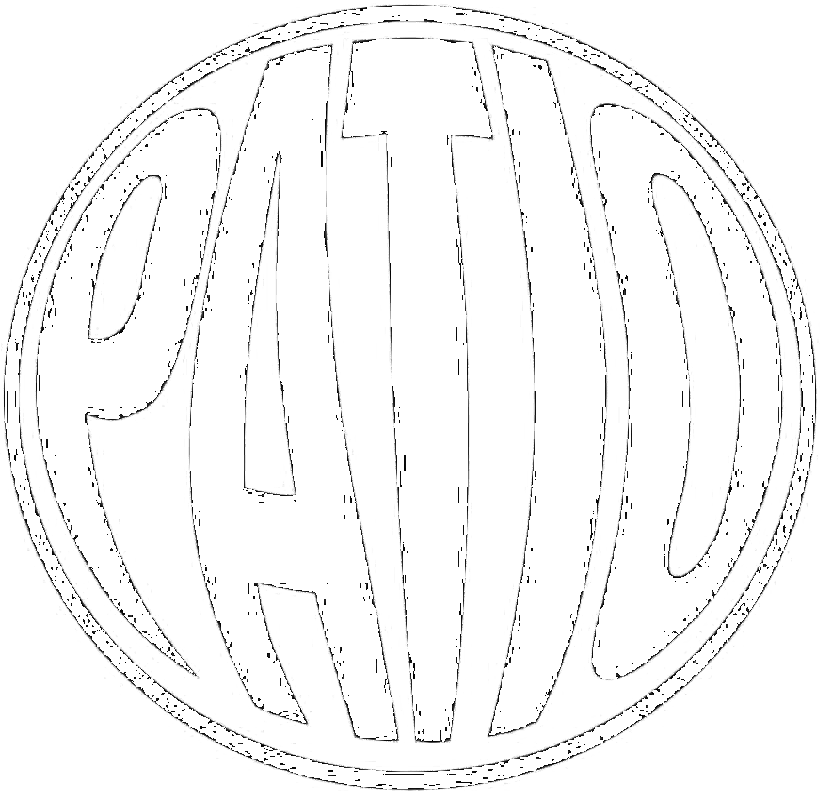
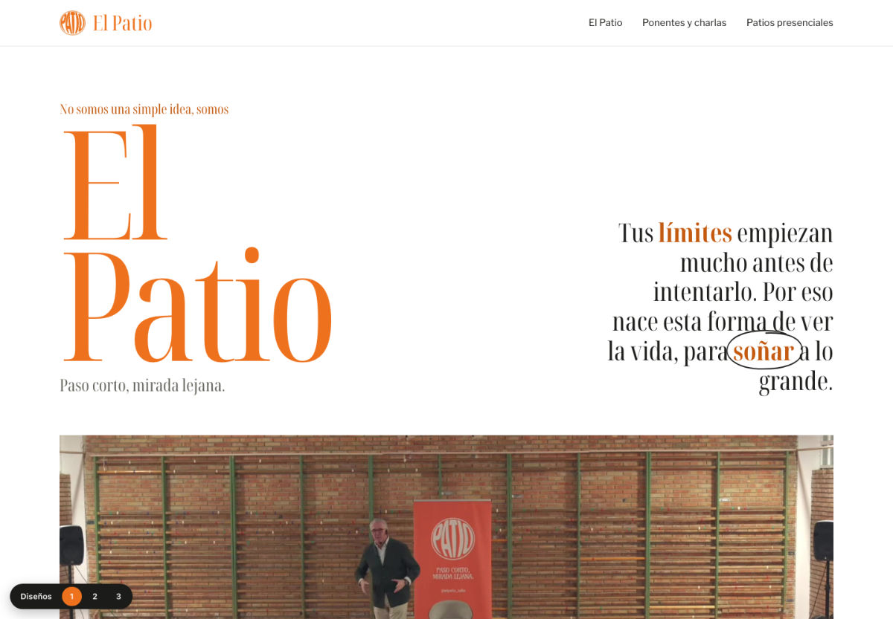
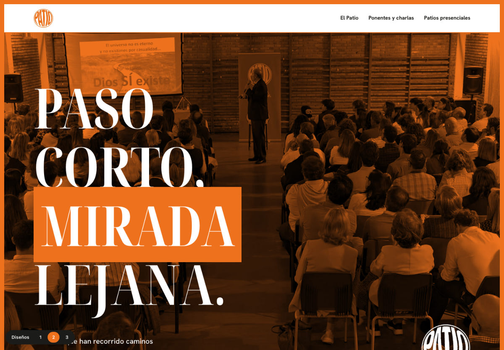
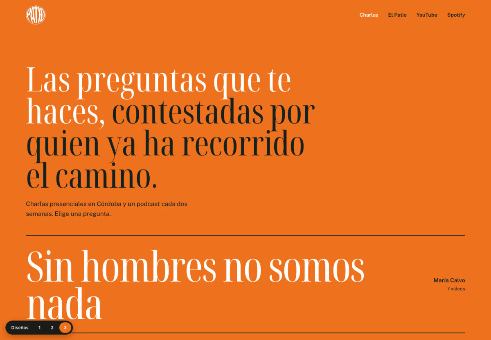

Tres propuestas de web con el mismo contenido. Entra en cualquiera y cambia de diseño cuando quieras con el selector de abajo a la izquierda: te lleva a la misma página en el otro diseño.

Editorial y limpio, fiel al manifiesto impreso: fondo blanco, serif naranja y el trazo a mano sobre "soñar".

El lenguaje de vuestras miniaturas de YouTube: marco naranja, mayúsculas estrechas y palabras clave sobre caja.

La web como un índice de preguntas. Cada una abre a su ponente con el vídeo y los fragmentos dentro de la página.